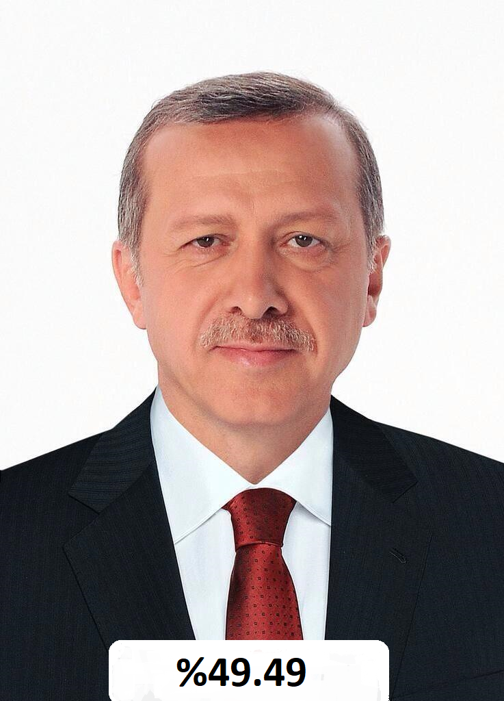
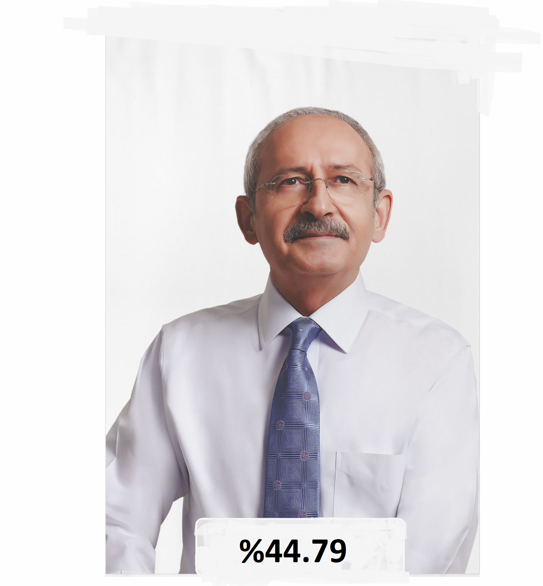
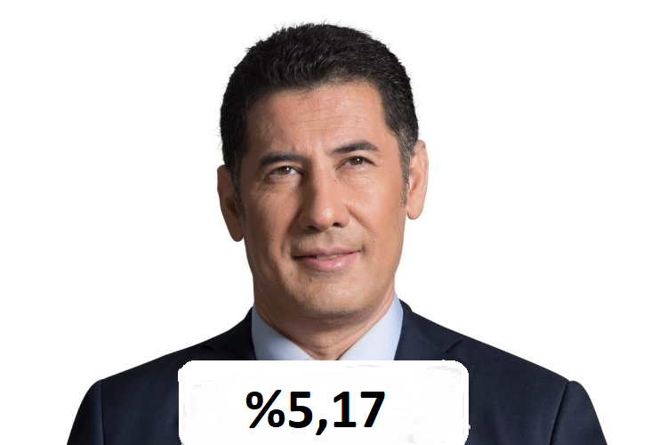
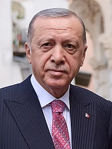
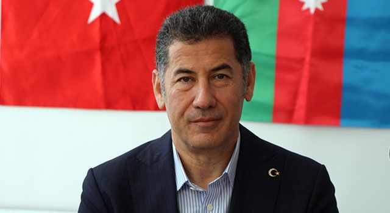
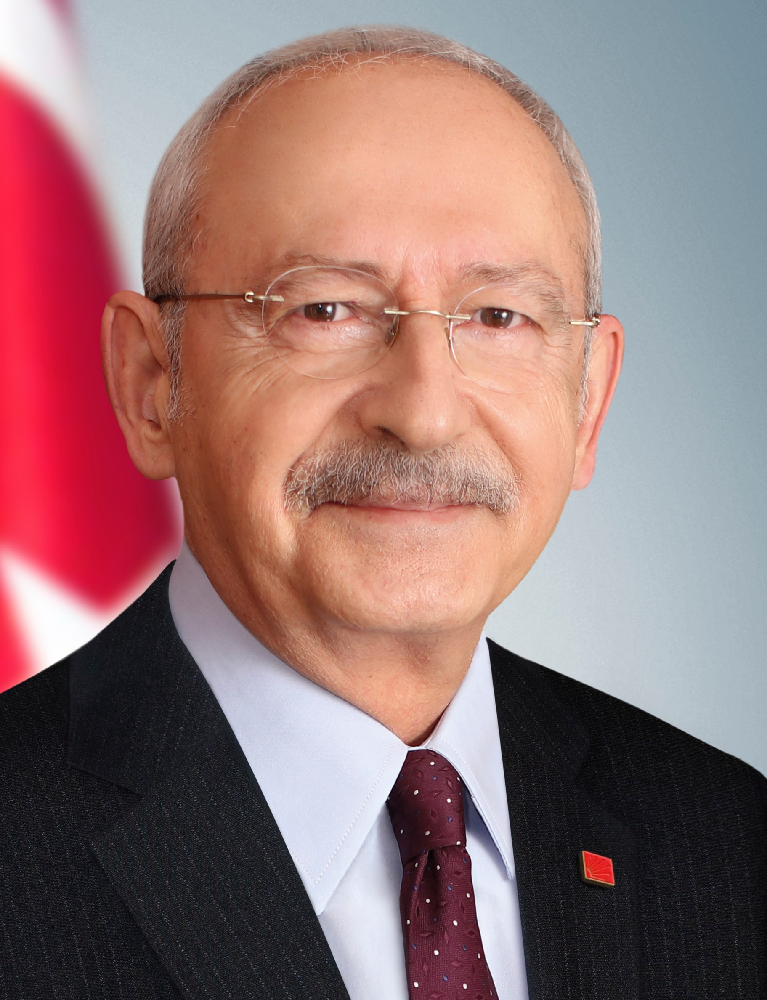

Turkiyede seckiler

2023 Türkiyə prezident seçkiləri — 14 may 2023-cü ildə Türkiyədə keçirilmiş prezident seçkiləri.Parlament seçkiləri ilə eyni gündə keçirildi.Ərdoğan bir açıqlamasında 1950-ci ildəki seçkilərə istinad edərək seçkilərin vaxtından əvvəl, 14 may 2023-cü ildə keçirilə biləcəyinin mümkünlüyünü açıqlamışdı.Bəzi müxalif partiyalar da bu tarixi seçki günü olaraq qəbul etmişdir.6 fevral 2023-cü ildə baş verən Türkiyə–Suriya zəlzələsindən sonra seçkilərin keçirilib-keçirilməcəyi barədə suallar yarandı, seçkilərin təxirə salınması barədə çağırışlar oldu.Türkiyə prezidenti Rəcəb Tayyib Ərdoğan tərəfindən 10 mart 2023-cü ildə imzalanan sərəncama əsasən, seçkilərin 14 may 2023-cü ildə keçirilməsi qərarlaşdırıldı.Seçkilərin ikinci turu 28 mayda keçiriləcək.
Rəcəb Tayyib Ərdoğan

Rəcəb Tayyib Ərdoğan 26 fevral 1954-cü ildə İstanbulun Qasımpaşa bölgəsində doğulmuşdur. 1965-ci ildə Piyalə paşa ibtidai məktəbini bitirmişdir. Həmin il İmam Xatib liseyinə daxil olmuş və 1973-cü ildə oradan məzun olmuşdur. Daha sonra ali təhsilini Mərmərə Universitetinin İqtisadi və ticari elmlər fakültəsində almışdır. Camialtı, İETT, və Eroksporda 16 il futbol oynamışdır. 12 sentyabr 1980-ci ildən sonra futboldan ayrılmışdır.2007-ci ildə "NTV" dəki proqramda türk olduğunu söyləmişdirMilli Türk Birliyindəki fəaliyyətindən sonra 1976-cı ildə islami dəyərlərə sadiqliyi ilə bilinən Milli Səlamət Partiyası Bəyoğlu Gənclər Şöbəsinin sədri və həmin il də MSP İstanbul il (vilayət) başçısı seçilmişdir. 1977-ci ildə bir konfransda tanış olduğu Əminə xanımla 4 iyul 1978-ci ildə evlənmişdir. Evliliklərindən Əhməd Burak və Nəcməddin Bilal adında iki oğlu, Əsra və Süməyyə adında iki qız övladı olmuşdur.[7]
1982-ci ildə hərbi xidmətdə olan və ehtiyat zabit təhsilini Tuzlada alan Ərdoğan qərargah zabiti olaraq əsgərliyini bitirmişdir. Hərbi xidmətdən döndükdən sonra əvvəllər çalışdığı şirkətdə təxminən il yarım işləmişdir. Sonraki iş fəaliyyətini başqa bir şirkətdə müdir olaraq davam etdirmişdir.[7]
Türkiyədə 12 sentyabr 1980-ci il çevrilişindən sonra ləğv edilmiş Milli Səlamət Partiyasının xəttini davam etdirən 1983-cü ildə qurulmuş Rifah Partiyası ilə siyasi fəaliyyətə təkrar qayıdan Ərdoğan 1984-cü ildə partiyanın Bəyoğlu rayon başçısı və yüksək idarə orqanına üzv seçildi.[8]
1986-cı ildə əlavə seçkilərdə deputatlığa namizədliyi irəli sürüldü. 1989-cu ildə isə Bəyoğlu rayonundan bələdiyyə sədrliyinə namizəd oldu.1989-cu il seçkilərində Rifah Partiyası ikinci yeri tutdu. 1991-ci ildə təkrar deputatlığa namizədliyini irəli sürdü. Partiya limiti keçdi və Ərdoğan millət vəkili oldu, lakin müxtəlif bəhanələr gətirərək Yüksək Seçim Qurumu deputat mandatını ləğv etti.
27 mart 1994-cü il seçkilərinə qədər partiyanın İstanbul İl (vilayət) başçısı vəzifəsində işləyən Ərdoğanın İstanbul Bələdiyyəsinin sədrliyinə namizədliyi də irəli sürüldü. 27 mart 1994-cü ildə keçirilən seçkilərdə İstanbul Bələdiyyəsinin sədri seçildi.
Sinan Oğan

Sinan Oğan (d. 14 Mart 1969;[a] Iğdır), Türk stratejik araştırmacı ve siyasetçidir. 2011 Türkiye genel seçimlerinde Milliyetçi Hareket Partisi'nden Iğdır milletvekili seçilerek meclise girdi. Marmara Üniversitesi ve Azerbaycan Devlet Ekonomik Üniversitesinde öğretim görevlisi olarak bulundu. 2023 cumhurbaşkanlığı seçimi için ATA İttifakı tarafından cumhurbaşkanı adayı gösterildi.Sinan Oğan, 14 Mart 1969 tarihinde Azerbaycanlı bir ailenin çocuğu olarak Iğdır'ın Melekli beldesinde doğdu.[2][3][4] Marmara Üniversitesi İktisadi ve İdari Bilimler Fakültesi İşletme bölümü mezunu olup aynı üniversitede 1992 yılında mali hukuk ve bankacılık alanında Azerbaycan'da Ekonomik ve Mali Sektörün Yapısal Analizi başlıklı tez ile yüksek lisans çalışmasını tamamlamıştır.[5] Moskova Devlet Uluslararası İlişkiler Üniversitesinde doktora çalışmasını tamamlamıştır. Marmara Üniversitesi Türkiyat Araştırmaları Enstitüsünde araştırma görevlisi, Azerbaycan Devlet Ekonomi Üniversitesinde öğretim görevlisi ve dekan yardımcısı olarak görev yaptı. 1991 yılında Sovyetler Birliği'nin dağılmasından önce Ebulfez Elçibey ile görüşme gerçekleştirdi ve Azerbaycan'ın bağımsızlığı sonrasında bir süre Elçibey'in cumhurbaşkanlığı ofisinde çalıştı.[6] 1992-2000 yılları arasında TİKA Azerbaycan temsilcisi oldu. Avrasya Stratejik Araştırmalar Merkezi (ASAM) Rusya Ukrayna Araştırmaları Masası başkanlığı yaptı. Uluslararası İlişkiler ve Stratejik Analizler Merkezini (TÜRKSAM) kurdu ve başkanlığını yaptı.[7]2011 Türkiye genel seçimlerinde Milliyetçi Hareket Partisi'nden Iğdır milletvekili seçildi. 26 Ağustos 2015 tarihinde Milliyetçi Hareket Partisi'nden ihraç edildi. Bunun ardından açtığı davayı kazanarak 2 Kasım 2015 tarihinde ihraç edildiği MHP'ye geri döndü.[8] 10 Mart 2017 tarihinde Balıkesir milletvekili İsmail Ok, Kayseri milletvekili Yusuf Halaçoğlu ve Isparta milletvekili Nuri Okutan ile birlikte MHP'den tekrar ihraç edildi.[9]
Türkiye-Arnavutluk ve Türkiye-Nijer Parlamentolararası Dostluk Grupları üyesi ve Türkiye-Azerbaycan Parlamentolararası Dostluk Grubu genel sekreteridir.[kaynak belirtilmeli]
Kamal Qılıncdaroğlu

Kemal Kılıçdaroğlu, 1948 yılında Tunceli’nin Nazımiye ilçesinde doğdu. İlk ve ortaöğrenimini Erciş, Tunceli, Genç, Elazığ gibi Anadolu’nun çeşitli yerlerinde yaptı. Yükseköğrenimini yapmak için girdiği Ankara İktisadi ve Ticari İlimler Akademisinden (Gazi Üniversitesi İktisadi ve İdari Bilimler Fakültesi) 1971'de mezun oldu. Lisans öğrenimini tamamladığı 1971 yılında, girdiği Hesap Uzman Yardımcılığı Sınavının ardından Maliye Bakanlığında göreve başladı. Daha sonra Hesap Uzmanı olan Kılıçdaroğlu, bir yıl Fransa’da kaldı. Hesap uzmanlığını 1983'e kadar sürdürdü ve aynı yıl Gelirler Genel Müdürlüğüne atandı. Burada önce Daire Başkanı olarak görev aldı, daha sonra aynı kurumun Genel Müdür Yardımcılığını yaptı. Kemal Kılıçdaroğlu 1991 yılında Bağ-Kur’a atandı. Burada genel müdürlük yapan Kılıçdaroğlu, 1992 yılında da Sosyal Sigortalar Kurumu Genel Müdürlüğüne geçti. Daha sonra kısa bir süre Türkiye Cumhuriyeti Çalışma ve Sosyal Güvenlik Bakanlığında müsteşar yardımcısı olarak görev yaptı. 1994 yılında Ekonomik Trend Dergisi tarafından “Yılın Bürokratı” seçildi. Kemal Kılıçdaroğlu, 1999'un Ocak ayında kendi isteğiyle Sosyal Sigortalar Kurumu Genel Müdürlüğünden emekli oldu. Sekizinci Beş Yıllık Kalkınma Planı çalışmalarında Kayıtdışı Ekonomi Özel İhtisas Komisyonuna başkanlık eden Kılıçdaroğlu, Hacettepe Üniversitesinde de bir süre ders verdi. Daha sonra Türkiye İş Bankasında Yönetim Kurulu Üyesi olarak görev yaptı. Kemal Kılıçdaroğlu, 3 Kasım 2002 tarihinde yapılan 22. Dönem Milletvekili Genel Seçimlerinde, Cumhuriyet Halk Partisi İstanbul Milletvekili olarak Meclise girdi. CHP Merkez Yönetim Kurulunda görev alan Kemal Kılıçdaroğlu, 22 Temmuz 2007 Milletvekili Genel Seçimlerinde de İstanbul’dan 23. Dönem Milletvekili seçildi ve Genel Başkanlığa adaylığını açıklayıncaya kadar CHP Grup Başkanvekilliği görevinde bulundu. 22 Mayıs 2010 tarihinde yapılan 33. CHP Olağan Kurultayı’nda Cumhuriyet Halk Partisi Genel Başkanı seçildi.